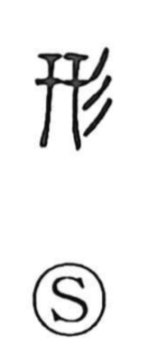

形

Kun: kata, katachi, nari | On: kei, gyo
shape ・ form ・ figure
Explanation
形 combines the older 井-shaped frame, later written 幵, with 彡. The frame is the wooden outer structure that holds a casting mould together. The mould gives its form to the object made inside it.
彡 marks colour, lustre, or visible beauty. 形 therefore first concerns the completed casting’s fine appearance—the shape produced when the work is finished. From this come shape and form generally, including the figure of a person or the outline of an object.
What is within becomes perceptible through its outward form. 形 can consequently describe something taking shape or manifesting itself, as well as the shape already visible.